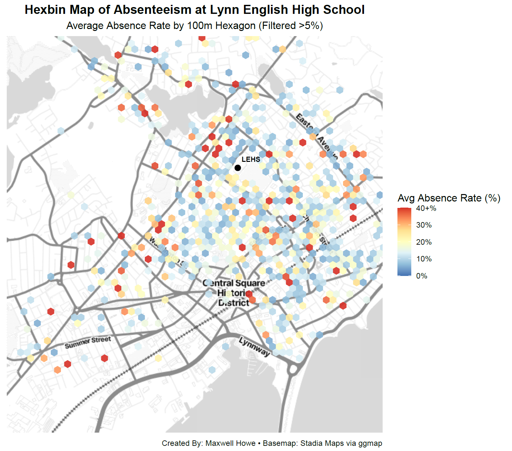
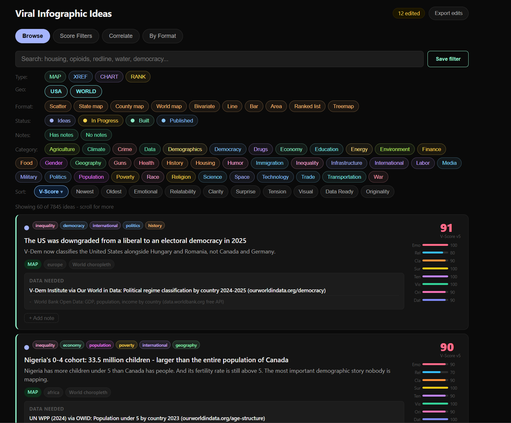

GIS Analyst · Cartographer · MS Geo-Information Science

Capstone ProjectGeocoded student addresses and analyzed the relationship between distance from school and chronic absenteeism in Lynn Public Schools. Built in R with 20 maps and statistical visualizations.
View Full Project →Interactive tools and platforms for GIS, cartography, and data visualization.

Interactive US state map coloring tool. Click states, build legends, quick-fill regions, and export as PNG or GeoJSON. Shareable via URL.
A custom scoring and correlation engine for infographic map ideas. Filter by geography, format, category, and multi-dimensional scores.
Open to GIS roles, freelance projects, and collaboration.